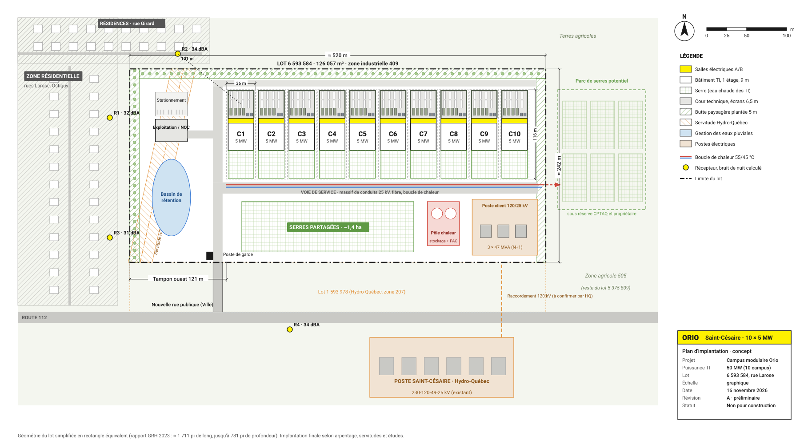
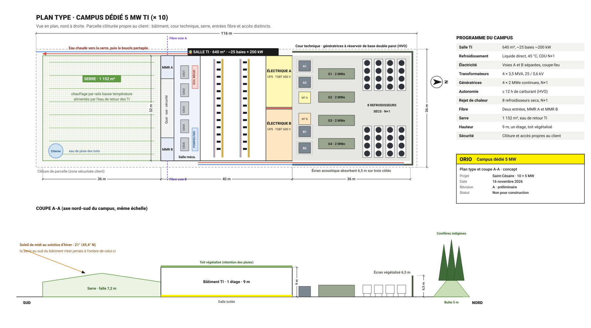
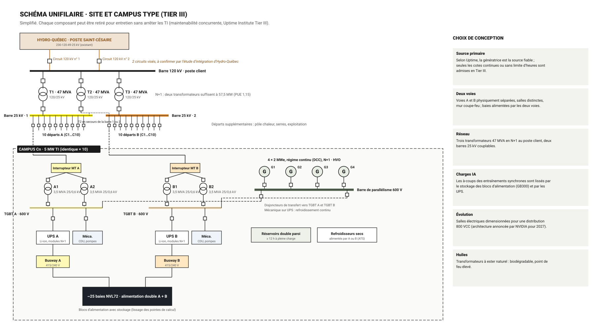
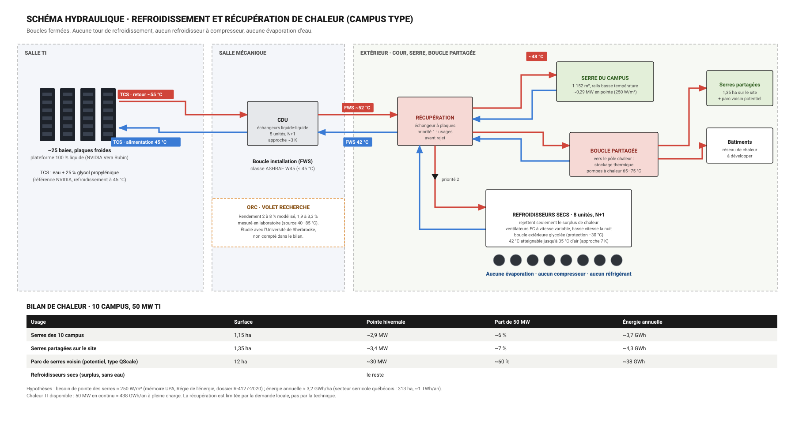
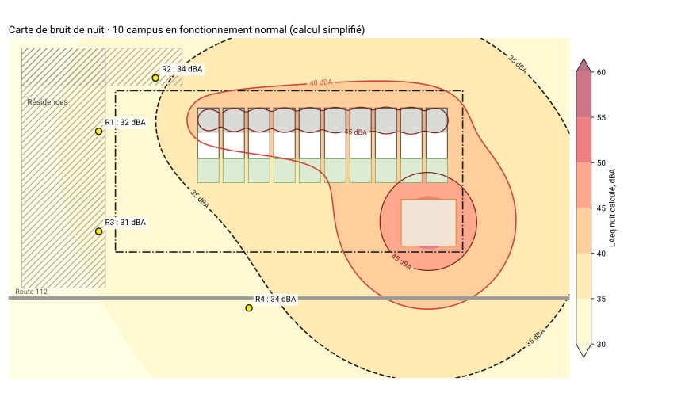

Modèle 3D interactif
Faites pivoter avec la souris, zoomez avec la molette. Même géométrie que les plans 2D ci-dessous. Concept préliminaire, non pour construction.
Plan d’implantation
Tout ce qui fait du bruit est au centre et au nord du site, derrière des écrans et une butte plantée. Tout ce que les voisins voient est vert : butte, bassin, serres. Accès par la future rue publique depuis la route 112, aucun camion sur la rue Larose.

Géométrie du lot simplifiée en rectangle équivalent (≈ 520 × 242 m). Implantation finale selon l’arpentage, les servitudes et les études.
Campus dédié de 5 MW
Chaque client reçoit sa propre parcelle clôturée : bâtiment d’un étage, cour technique, génératrices, transformateurs, deux entrées fibre et une serre. Rien n’est partagé entre clients en aval du poste 25 kV.

Schéma unifilaire

Refroidissement et récupération de chaleur

Bruit de nuit
Calcul simplifié : divergence géométrique hémisphérique, 2 dB d’effet de sol, 12 dB d’écran pour les cours, butte non comptée. Puissance acoustique visée par campus la nuit : 90 dB(A). Poste client : 92 dB(A). Une étude ISO 9613-2 complète, avec mesure du bruit de fond, suivra.

| Récepteur | Niveau calculé la nuit | Critère Québec (zone I, nuit) | Cible Orio |
|---|---|---|---|
| R1 · rue Larose (ouest) | ≈ 32 dBA | 40 dBA | ≤ 35 dBA |
| R2 · rue Girard (nord-ouest) | ≈ 34 dBA | 40 dBA | ≤ 35 dBA |
| R3 · rue Larose (sud-ouest) | ≈ 31 dBA | 40 dBA | ≤ 35 dBA |
| R4 · route 112 (sud) | ≈ 34 dBA | selon le zonage | ≤ 35 dBA |
Hypothèses et sources
- Lot, zonage, accès, servitudes : rapport d’évaluation GRH (mai 2023) et certificat de localisation.
- Poste Saint-Césaire à 230-120-49-25 kV : Hydro-Québec, Régie de l’énergie, dossier R-4258-2024 (pièce B-0004).
- Autorisation des charges de 5 MW et plus par le MEIE ; tarif CD proposé (~13 ¢/kWh en moyenne), en examen à la Régie : dossier R-4333-2026.
- Classes de refroidissement liquide W17 à W+ : ASHRAE TC 9.9.
- Refroidissement à 45 °C sans refroidisseur à compresseur, TCS eau + 25 % de glycol propylénique : NVIDIA (plateforme Vera Rubin, CES 2026).
- Cotes de génératrices admises en Tier III (continues, prime déclassée, ou sans limite d’heures) : Uptime Institute, Tier Standard: Topology.
- Lissage de puissance par stockage dans les blocs d’alimentation GB300 NVL72 : NVIDIA Technical Blog.
- Architecture 800 VCC prévue avec les systèmes Kyber en 2027 : NVIDIA Technical Blog.
- Critères de bruit : Note d’instructions 98-01 (40 dBA la nuit en zone I), remplacée en janvier 2026 par les Lignes directrices relatives à la gestion du bruit environnemental ; critères applicables à confirmer.
- Majoration des courbes IDF pour les changements climatiques : MELCCFP, fiche Gestion des eaux pluviales (novembre 2024).
- Besoin de pointe des serres ≈ 250 W/m² : mémoire de l’UPA, Régie de l’énergie, dossier R-4127-2020. Secteur serricole : 313 ha, ~1 TWh de chaleur par an.
- Parc de serres de 12 ha chauffé par les rejets de QScale à Lévis : gouvernement du Québec, programme Valorisation des rejets thermiques.
- ORC sur rejets de 40 à 85 °C : rendement de 2 à 8 % modélisé, 1,9 à 3,3 % mesuré (Araya et al., Boise State).
Statut : concept préliminaire d’Orio, novembre 2026. Les valeurs de bruit, de chaleur et de pluie sont des estimations d’ingénierie à valider par les études de site. Non pour construction.